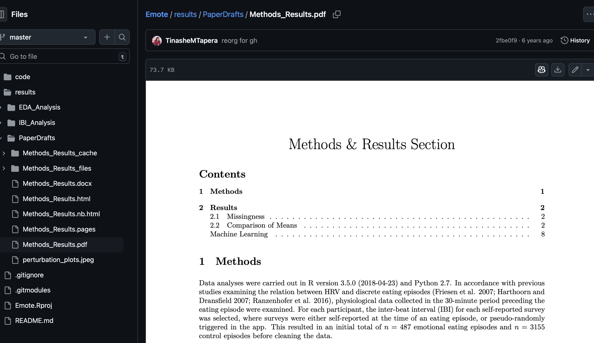

Reproducible Data Science Workflows in Climate & Public Health Research
🌍🤖📊
A practical guide for students
2025-06-24
Welcome 👋
Why we’re here

- Guide you to sustainable, reproducible, and collaborative data science workflows.
- Orient you to cluster computing using Harvard FASRC, not your laptop.
- Introduce principles and tools that help you focus on science, not logistics.
Meet Lou…

Day 1 of grad school vs. Day ???
- Lou is a graduate student who is excited to do the science
- Eventually, Lou becomes tired, overworked, demotivated, and hungry
- Lou’s work suffers as he gets overwhelmed
- Not documenting sufficiently
- Manually moving files
- Hard-coding programming loops/recursion
- Running long code on a slow laptop
- Arbitrarily naming files and versions
Proposing A Data Science Philosophy 💬
- Prefer remote + reproducible over local + manual
- Code, not outputs, should be the source of truth
- Narrate your thinking with notebooks
- Track your work with Git
- Save on technical debt by investing in robust systems
 3
3
Notebooks aren’t just for code outputs…



🤯🤯🤯
THIS PRESENTATION IS A NOTEBOOK


Organize Projects with here(), configs, and renv

- Use
here::here()instead of"../"or"~/Downloads/"
library(here)
here("data", "input.csv")- Use
configs to manage paths outside of the project - Keeps paths portable and self-documenting
- Helps build & maintain structured projects
default:
data_dir: "/nfs/shared/data"
results_dir: "/nfs/shared/results"
madagascar:
shapefile: "https://data.humdata.org/dataset/26fa506b-0727-4d9d-a590-d2abee21ee22/resource/ed94d52e-349e-41be-80cb-62dc0435bd34/download/mdg_adm_bngrc_ocha_20181031_shp.zip"- Use
renvand/orcondato manage packages - Allows you to document exact package versions and dependencies for each project
- Stores package metadata in a text file that can be version controlled and shared with your project
It’s time to publish your groundbreaking paper on the equivalence of
glmandlm! You’ve run the analysis three times now:fantastic_analysis_v3.R,final_FINAL.Rmd, andFINAL_revised_with_comments_v2.qmd.
During a meeting, the PI asks:
“Can you show me what changed between the version we worked on 6 weeks ago and this one you sent me yesterday?”


Version Control with Git & GitHub
Why Git?
- Track every change you make
- Recover and understand past versions
- Collaborate without fear

I get it; it’s a lot 😰

- It’s a learning process/investment with benefits accruing over time
- Adopting these principles gradually is fine — start small, but start now.
- These principles aren’t about using fancy tools — they’re about creating systems that are beneficial to your future self and your collaborators.
- Labs that adopt reproducible workflows produce cleaner, more sustainable+trustworthy science.
Recap: Your Sustainable Stack
| Principle | Tool | What We Learned |
|---|---|---|
| Efficiency | FASRC | Remote computing |
| Transparency | Notebooks | Narrated and reproducible scientific analysis |
| Modularity | here() + renv |
Robust file paths & environment isolation |
| Traceability | Git + GitHub | Version control and team collaboration |
| Flexibility | googledrive + pins |
Reproducible I/O with shared cloud data |

Congratulations! You’ve earned all 5 stars
Footnotes
https://www.nature.com/articles/533452a
https://www.mdpi.com/2072-4292/17/9/1482
https://www.nature.com/articles/sdata201618
https://www.rc.fas.harvard.edu/cluster/publications/
https://www.azquotes.com/quote/1463174
https://www.cs.tufts.edu/~nr/cs257/archive/literate-programming/01-knuth-lp.pdf
https://www.nature.com/articles/d41586-018-07196-1
https://www.mdpi.com/2624-5175/6/1/1
https://link.springer.com/article/10.3758/s13428-020-01436-x
https://journals.lww.com/epidem/citation/2025/05000/advancing_reproducible_research_through_version.8.aspx
https://link.springer.com/article/10.1186/1751-0473-8-7
https://www.nature.com/articles/s41597-025-04451-9
https://www.bbc.com/news/magazine-22223190